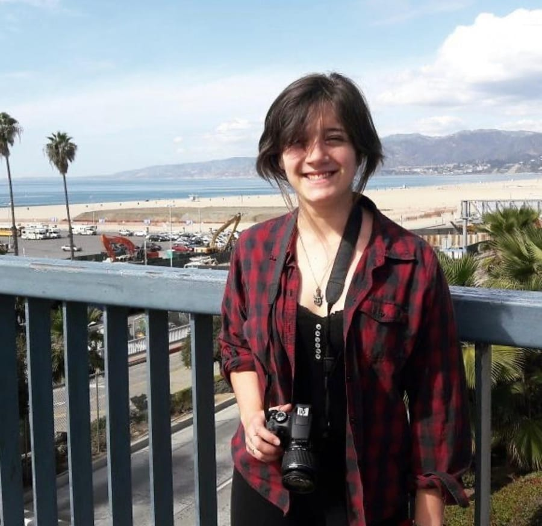
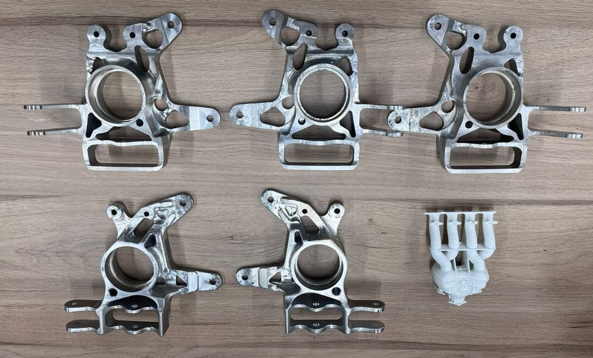
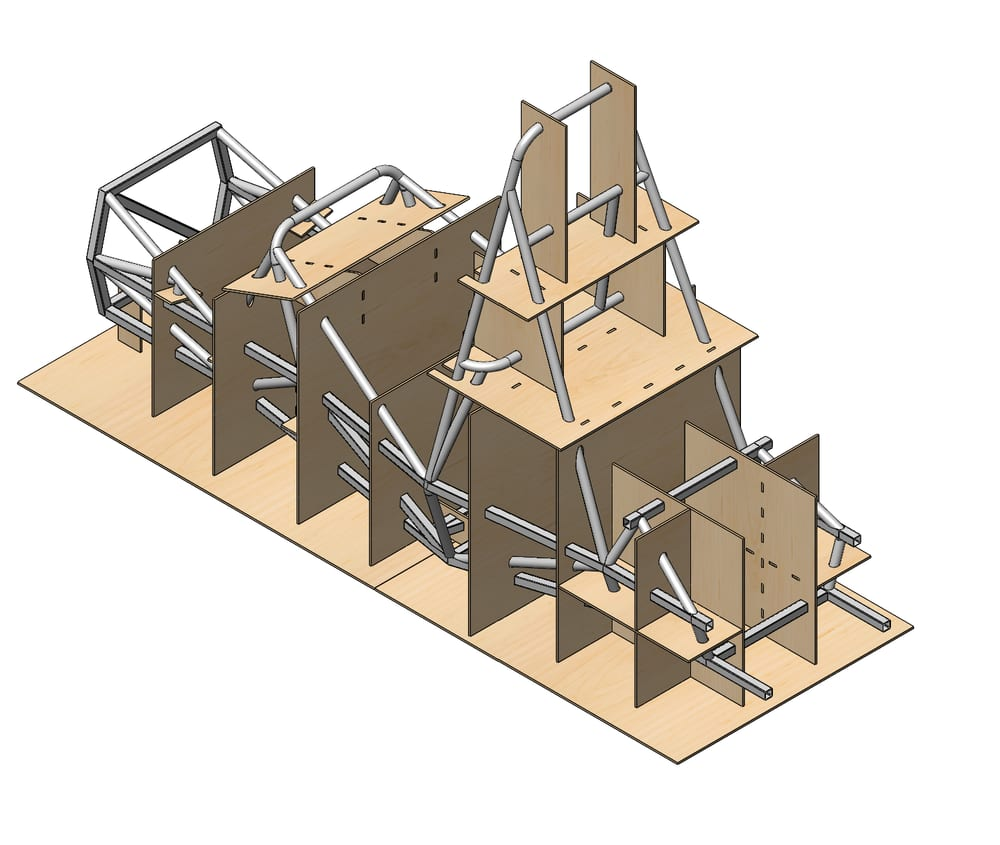
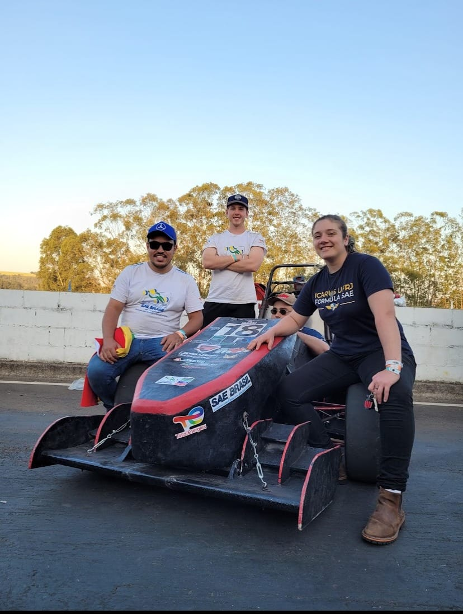
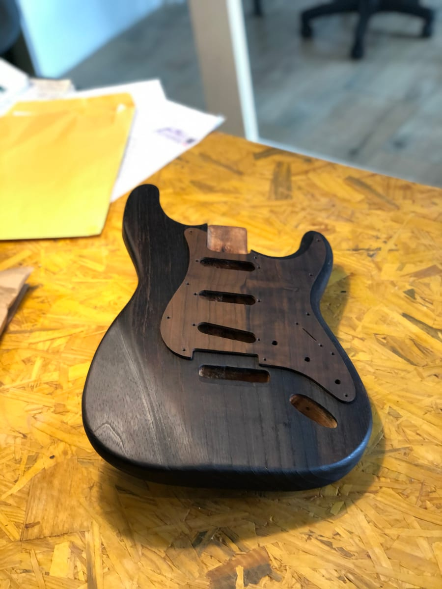
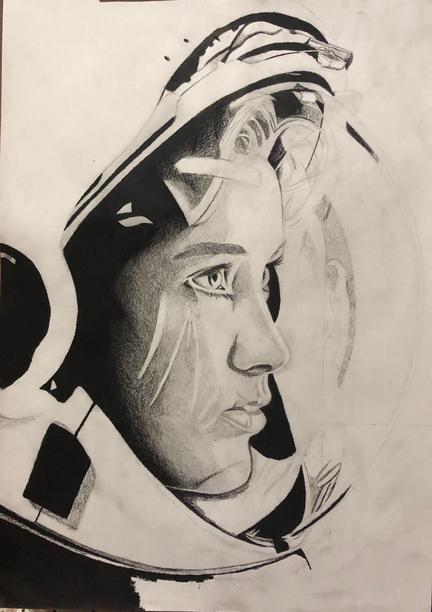
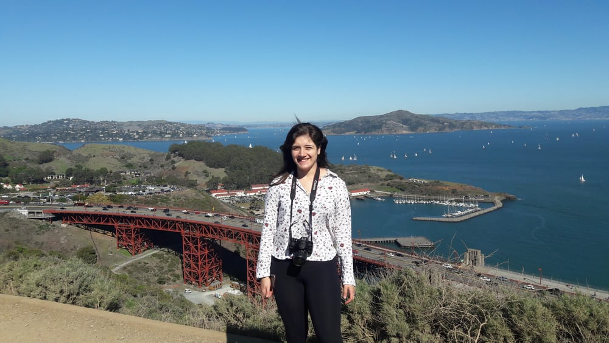

Engenheira Mecânica formada pela UFRGS, com forte interesse em projeto mecânico e automobilismo. Trabalhei com desenvolvimento de suspensão para veículos de competição Fórmula SAE, projetos na área de óleo e gás, segurança do trabalho e fabricação de instrumentos musicais. Sou apaixonada por resolver problemas das mais diversas naturezas — da análise de elementos finitos à luthieria.
Além da engenharia, construo guitarras e baixos do zero, faço trabalhos em pirografia, desenhos realistas a lápis e projetos de marcenaria.
Disponível para projetos freelance
Engenharia
Projeto mecânico end-to-end: da concepção à manufatura. Soluções técnicas inovadoras para diferentes contextos industriais, do campo à fábrica.
Ver projeto →
Engenharia
Geometrias de suspensão para veículos comerciais. Análise de elementos finitos e fadiga.
Ver projeto →
Motorsport
5 anos na equipe RS Racing UFRGS: liderança de suspensão, projeto de peças usinadas, aquisição de dados e competições nacionais.
Ver projeto →
Maker
Construção de instrumentos elétricos a partir de madeira bruta. Customizações com pirografia e técnica japonesa shou sugi ban.
Ver projeto →
Maker
Retratos realistas a lápis e pirografia sobre madeira, incluindo a técnica shou sugi ban.
Ver projeto →
Maker
Curiosidade sem limites: exploro desertos, florestas, cidades históricas e culturas ao redor do mundo com o mesmo entusiasmo que dedico à engenharia e ao artesanato.
Ver projeto →2023
Equipe RS Racing UFRGS. Pilota de Skidpad em 2022.
2023
Programa da FIA no Autódromo de Tarumã, com a Copa Truck.
2022
Ministrado por Jorge Segers, com visita aos boxes da Porsche Cup em Interlagos.
2019–2020
Grupo Peccátu, em cartaz por mais de um mês na Casa de Cultura Mário Quintana.
2015
Banda do Colégio Militar de Porto Alegre.
Visitas
Lamborghini (Itália), BMW (Alemanha), Scania (Brasil) e Canton Fair (China).
Tem um projeto em mente? Vamos conversar.
Disponível para projetos freelance e parcerias técnicas